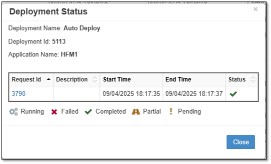

Deployment
The Deployment module centrally manages metadata deployments using the EPMware deployment system. It manages how and when metadata requests are deployed, allowing you to load metadata on demand or schedule a batch to run during off hours. Deployment metrics for all your EPM applications are displayed on one page, and you can monitor in real time as "one time" or batches are deployed to their respective target applications.
The Monitor Tab displays each Deployment instance that is generated based on the Deployments defined on the Deployment Manager tab. Create a recurring calendar for daily, weekly or monthly metadata deployments and monitor deployment progress with comprehensive status tracking.

Deployment monitor interface showing deployment instances and status
Monitor Tab
The grid will display each Deployment instance that is generated based on the Deployments defined on the Deployment Manager tab. To redeploy a deployment that has a status of Failed or Partial in the Status column, right click on the row and select Redeploy. This will place all un-deployed requests back in the pool for the next scheduled deployment.
To redeploy an individual Request, click on the Deployment ID to display the Deployment Status popup then right click on a row and select Redeploy. The redeployment for the individual Request will run on the next scheduled Deployment.
Monitor Grid
- Deployment Id - Unique ID assigned to the Deployment.
- Name - Name of Deployment as defined on Manager Tab.
- Application -- Application being deployed
- Start Time - The date and time that the Deployment instance began running.
- End Time - The date and time that the Deployment instance completed.
- Status - Will display either Running or Completed
- Message -- Deployment progress messages
- Files -- Click to download the deployment files
- Log - Will display the log file pertaining to this deployment instance.
Grid Filter and Auto Refresh
The Filter icon will display the Grid Filter popup and the Auto Refresh icon will toggle Auto Refresh on and off.

Grid filter dialog for narrowing deployment results

Auto refresh toggle for real-time monitoring
The Grid Filter allows you to narrow down deployment results by:
- Start Date: Filter by deployment start date range
- End Date: Filter by deployment completion date range
- Deployment ID: Search for specific deployment instances
- Deployment Name: Filter by deployment name
- Deployment Status: Filter by completion status
- Application: Filter by target application
- Dimension: Filter by dimension being deployed
- Request ID: Search for deployments containing specific requests
Deployment Status
The Deployment Status popup is displayed by clicking on the Request ID in the Deployment Monitor Grid. This provides detailed status information for individual requests within a deployment.

Deployment status popup showing individual request details
{kind=link}
The Deployment Status shows: - Deployment Name and Deployment ID - Application Name being deployed - Individual Request ID, Description, Start Time, End Time, and Status for each request - Action options to Redeploy individual failed requests
Note
The Deployment Status popup is displayed by clicking on the Request ID in the Deployment Monitor Grid
Status Legend
Each deployment can have different status indicators that show the current state of the deployment process:
 Completed - This icon indicates the deployment has completed successfully.
Completed - This icon indicates the deployment has completed successfully.
 Pending - This icon indicates the deployment has an action pending, but the deployment will finish once the pending action is complete.
Pending - This icon indicates the deployment has an action pending, but the deployment will finish once the pending action is complete.
 Partial - A partial status is indicated when some metadata Request lines on a Request have been deployed, but other lines have failed to deploy. To change from Partial status to Complete, the failed line on the Request must be fixed and the Deployment Redeployed or the Deployment must be manually Closed.
Partial - A partial status is indicated when some metadata Request lines on a Request have been deployed, but other lines have failed to deploy. To change from Partial status to Complete, the failed line on the Request must be fixed and the Deployment Redeployed or the Deployment must be manually Closed.
 Failed - This icon will indicate the deployment has failed and will not finish without user intervention.
Failed - This icon will indicate the deployment has failed and will not finish without user intervention.
 Running - This icon will indicate the deployment does not have any actions pending, and is currently running.
Running - This icon will indicate the deployment does not have any actions pending, and is currently running.
Note
Right clicking on a row in the Deployment Status popup will display the menu option Redeploy. Selecting Redeploy will put the individual Request in the eligible pool for the deployment engine to pick up on the next run.
Redeployment Process
To redeploy failed or partial deployments:
-
For entire deployment: Right-click on the deployment row in the Monitor grid and select Redeploy
-
For individual requests:
- Click on the Deployment ID to open the Deployment Status popup
- Right-click on the specific request row
- Select Redeploy from the context menu
The redeployment will be processed during the next scheduled deployment cycle.
Real-Time Monitoring
The Deployment Monitor provides real-time visibility into your metadata deployment process:
- Live Status Updates: See deployment progress as it happens
- Auto Refresh: Toggle automatic refresh for continuous monitoring
- Batch Processing: Monitor multiple deployments simultaneously
- Historical Tracking: View completed deployments and their results
- Error Handling: Identify and redeploy failed requests quickly
Scheduled Deployments
EPMware supports flexible deployment scheduling:
- On-Demand: Deploy metadata immediately as needed
- Scheduled Batches: Set up recurring deployment windows
- Off-Hours Processing: Schedule deployments during low-usage periods
- Calendar Integration: Create daily, weekly, or monthly deployment schedules